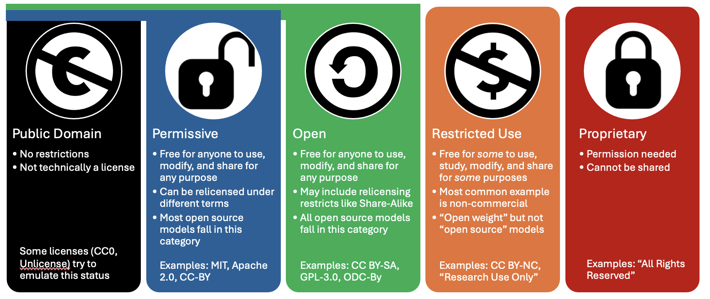
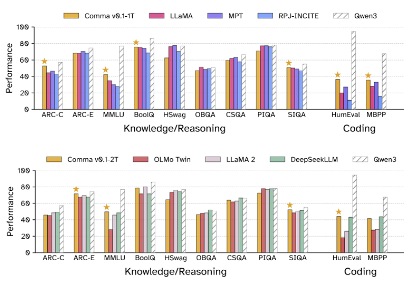
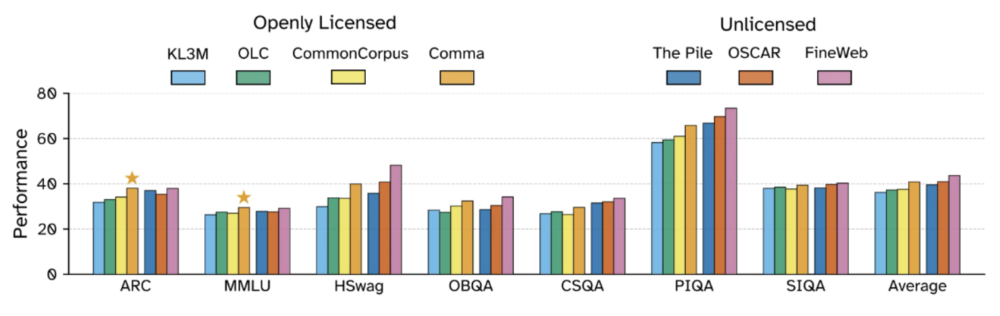

The Common Pile v0.1
Four and a half years ago, EleutherAI entered the AI scene by releasing the Pile: An 800GB Dataset of Diverse Text for Language Modeling. The Pile was unique at the time for many reasons, including pioneering now standard data sources such as PubMed and StackExchange and introducing the idea of training on code and natural language side by side. But the most important thing was that it was 300 billion GPT-2 tokens that we were actively training a large language model on, by far the largest pretraining dataset ever released by its creators. When we released GPT-Neo in early 2021 it was not only the most powerful open source GPT-3-style model in the world, it was also the first LLM trained on data that was publicly released by its creators.
Public release of large-scale training datasets is necessary for rigorous scientific work. Research in fields such as memorization and privacy, data curation and curriculum learning, training dynamics, and bias and fairness, is impossible without access to training data. Moreover, a shared corpus enables controlled ablation studies and head-to-head benchmarking because alternative architectures can be evaluated under identical data conditions, as seen with efforts such as RWKV (Peng et al, 2023, Peng et al., 2024), and Mamba (Gu and Dao, 2023, Gu and Dao, 2024) using the Pile as a standard for comparing performance. It enables people to build on each other’s work more effectively and reduces duplication of effort. Finally, when highly irreproducible benchmarks are a major way model capabilities are assessed, being able to compare the training and testing data for leakage is important for building public trust.
The past several years have seen dozens of lawsuits regarding the use of data in machine learning. These lawsuits have not meaningfully changed data sourcing practices in LLM training, but they have drastically decreased the transparency companies engage in. Comparing models released between 2020 and 2022 to ones released in 2023 through today reveals a troubling trend of decreasing transparency. Even companies that are famous for being closed such as OpenAI, Anthropic, and Google DeepMind used to disclose substantial amounts of information about their pretraining data mixtures and the experiments that went into designing their corpora. While we generally prefer release to mere transparency, these papers represent far more insight into their training contents than work released by the same companies in recent years. Researchers at some companies we have spoken to have also specifically cited lawsuits as the reason why they’ve been unable to release the research they’re doing in highly data-centric areas. A handful of organizations such as AI2, Hugging Face, Zyphra, and LLM360 have defied this trend, but the rate of growth of public pretraining corpora hasn’t nearly matched that of public pretrained models.
Even when organizations don’t release their full training data, public disclosure of data information is also pro-social. One of the core tenets of the open source movement is that people should have the right to understand how the technologies they use – and are subject to – function and why. Training data disclosure is a key component of this. It also is important for accountability purposes: some of the leading model providers have been warning about the potential negative impacts of their products in areas such as their ability to generate malware, non-consensual intimate imagery, and their detailed knowledge of how to design weapons of mass destruction [1]. If what they claim is true, the public deserves to know and auditors need to be able to validate that companies are following best practices at filtering out such data from training sets. The current state of the field is that such best practices do not exist, as no organization making such claims based on their pretraining has engaged in any amount of data filtering disclosure.
Today we are excited to announce the long-awaited release of the successor to the Pile: the Common Pile v0.1. In collaboration with our friends at the University of Toronto and Vector Institute, Hugging Face, the Allen Institute for Artificial Intelligence, Teraflop AI, Cornell University, MIT, CMU, Lila Sciences, poolside, University of Maryland, College Park, and Lawrence Livermore National Laboratory we have spent the past two years meticulously curating a 8 TB corpus of openly licensed and public domain text for training large language models. We are also releasing Comma v0.1-1T and Comma v0.1-2T, models trained for 1T and 2T tokens respectively on this dataset. You can find everything we have released on arXiv, Hugging Face and GitHub.
Openly licensed data
Openness is a deep cultural value at EleutherAI. We are an open science, open source, and open knowledge community. One of our primary goals is to empower more people around the world to use, learn about, and participate in research on, large language models.
What is openness?
Curating openly licensed datasets takes a lot of effort. There are differing opinions on what constitutes an "open" license for which purpose. For Common Pile we had to consult legal experts to create a list of licenses we consider sufficiently open for the purposes of LLM training data. A good start is the list of permissive licenses vetted by the Blue Oak council. We decided to rely on the Open License Definition of the Open Knowledge Foundation, which also include some copyleft licenses like Share-Alike licenses in addition to permissive licenses.
The core principles underlying the Open License Definition is the same that underlies the OSI’s Open Source Definition, Creative Commons’ statement on Open Culture, Wikimedia's licensing policy and more: “open” means that permission is granted to use, study, modify, and redistribute by any person for any purpose. We chose this standard for two main reasons: firstly, to synchronize our efforts with that of other open culture organizations; and secondly, to solve the issue that no widely used license explicitly mentions AI. Indeed, most open licenses contain language like "[t]he Licensor authorizes You to exercise the Licensed Rights in all media and formats whether now known or hereafter created, and to make technical modifications necessary to do so." (quote from CC BY 4.0)

Unfortunately identifying the license a particular work has is surprisingly hard and automatic tools for doing are not reliable enough to meet our standards. One notable exception is code repositories, where we are able to use the excellent tooling developed by the Software Heritage Foundation and the BigCode project, as well as the ScanCode Toolkit, to build the openly licensed subset of the Stack v2. We believe this component of the Common Pile v0.1 will be of particular interest to many ML researchers. In the absence of automatic tooling, we've had to rely on metadata provided by trusted sources and manual curation aimed at identifying licenses and removing content we suspect has a laundered license.
Public domain works are even harder to identify, because the Public Domain is not a license but a legal status which indicates the absence or expiration of copyrights. Whether a work is in the public domain differs from jurisdiction to jurisdiction, and often there is no definitive proof a document is in the public domain. Institutions which provide access to public domain works should use a machine-readable rights status indicator like the Creative Commons Public Domain Mark. However, we have found that only a minority of works are accompanied by the Public Domain Mark and the public domain status of the works are indicated at the collection level or buried somewhere in the small print of a website, as in the case of GovInfo, the digital repository of the US Government Printing Office.
Building the open data landscape
We and our collaborators care deeply about the open data landscape. During the course of this project we’ve developed a variety of tools, standards, and pipelines for data extraction and license identification, some of which have already been released and some of which we plan to release in the future.
In June 2024 Mozilla and EleutherAI held a Dataset Convening bringing together experts from open-source AI startups, nonprofit AI labs and civil society organizations to discuss emerging practices in the open data space. We also previewed this work at the convening and received input and feedback on the decision-making processes. The results of that convening have been written up in a paper: Towards Best Practices for Open Datasets for LLM Training.
We've released the code used to build this dataset on Github and expect some of the tooling to be widely useful. We also partnered with Mozilla to release stand-alone tooling for transcribing audio files with Whisper and doing document conversion with Docling (see here to learn more).
Building on Common Pile v0.1, we aim to release open datasets more frequently from now on, in collaboration with our friends and partners. One area where we see major untapped potential for collaboration is the cultural heritage sector. Common Pile already contains the texts of almost 300,000 public domain books digitized by the Library of Congress and the Internet Archive. Many of these books were digitized using legacy OCR technology. We are confident that applying current state-of-the-art open-source OCR models like Docling or Surya would dramatically increase the quality of the extracted text. Similarly, we’ve had great success using Whisper to transcribe audio content and hope to use it to improve captioning and make data more accessible in the future. We believe that it is time to establish mutually beneficial partnerships between the Open Source AI community and libraries, museums and archives to publish more public domain works as high-quality open datasets.
Comma v0.1 matches the performance of models trained on unlicensed data
A common concern raised when people talk about using openly licensed text to train a LLM is that the resulting model won't be as good as models trained on unlicensed data. To address this we train two 7B parameter models, one for 1 trillion tokens and one for 2 trillion tokens, on our dataset. We find that our Comma model performs comparably to leading models trained in the same regime on unlicensed data.

We also look at how our dataset compares to other licensed and unlicensed datasets via smaller-scale ablation studies. We find that models trained on the Common Pile v0.1 outperforms models trained on KL3M, OLC, and Common Corpus and performs comparably to ones trained on the Pile or OSCAR. That said, there still is a gap compared to FineWeb.

In general, we think that the common idea that unlicensed text drives performance is unjustified. While there is a performance gap compared to FineWeb, we ascribe that to the fact that FineWeb starts with a far larger pool of data and so can be more aggressive about filtering for only the best data to train on. As the amount of accessible openly licensed and public domain data grows, we can expect the quality of models trained on openly licensed content to improve.
Looking Forward
Calling this dataset the Common Pile v0.1 is a very clear statement of intent. We are very excited about this release, but view it as the first step not the last step. We want to build bigger and better versions, unlock openly licensed data that's currently unusable, and contribute more back to the commons. We are also interested in openly licensed post-training data so that we can adapt the Comma v0.1 models to be more useful to many users.
Citation Information
To cite this work, please use
@article{kandpal2025common,
title={{The Common Pile v0.1: An 8TB Dataset of Public Domain and Openly Licensed Text}},
author={Kandpal, Nikhil and Lester, Brian and Raffel, Colin and Majstorovic, Sebastian and Biderman, Stella and Abbasi, Baber and Soldaini, Luca and Shippole, Enrico and Cooper, A. Feder and Skowron, Aviya and Longpre, Shayne and Sutawika, Lintang and Albalak, Alon and Xu, Zhenlin and Penedo, Guilherme and Ben Allal, Loubna and Bakouch, Elie and Pressman, John David and Fan, Honglu and Stander, Dashiell and Song, Guangyu and Gokaslan, Aaron and Kirchenbauer, John and Goldstein, Tom and Bartoldson, Brian R. and Kailkhura, Bhavya and Murray, Tyler},
journal={arXiv preprint arXiv:2506.05209},
year={2025}
}
Footnotes
[1] While litigating these topics is out of scope of this work, we believe that the threat of harm due to NCII is far more substantiated than malware generation or sharing information about weapons of mass destruction. That said, when a corporation makes such dramatic claims about their commercial products they have a moral obligation to justify why they